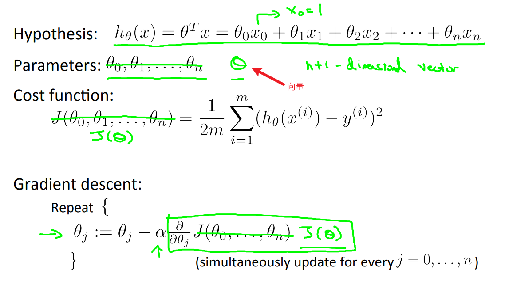
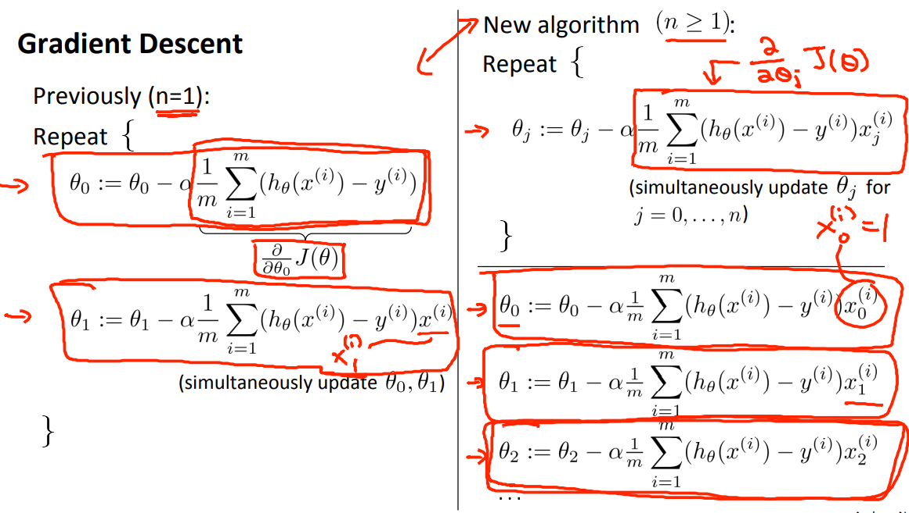

吴恩达机器学习笔记2: 线性回归
线性回归(Linear regression)试图学得一个线性模型以尽可能准确地预测实值（连续值）输出标记。
1 单变量线性回归(Linear Regression with One Variable)
单变量线性回归指的是在构造的模型中只有一个自变量/特征。
1.1 模型表示(Model Representation)
下面以一个预测住房价格的例子开始，如图1所示，横轴表示房子的面积大小，纵轴表示房子的售卖价格。如果给出一个房子的面积大小，比如1250平方尺大小，要能估计出该房子能够卖多少钱？那么，首要做的就是构建一个模型，可能是直线，也有可能是其他。
如图2所示是房屋交易问题的例子所提供的训练集(Training Set)。
在本文中描述该回归问题的标记如下:
- $m$代表训练集中实例的数量
- $x$ 代表特征/输入变量
- $y$ 代表目标变量/输出变量
- $(x,y)$ 代表训练集中的实例
- $(x^{(i)},y^{(i)})$ 代表第$i$个观察实例
- $h$ 代表学习算法的解决方案或函数（表示映射关系），也被称为假设(hypothesis)
如图3所示，表示的是一个监督学习算法的工作方式:
从图中可知，首先就是提供一个训练集（此处该训练集是房屋价格）给学习算法，然后该学习算法能够输出一个函数，采用$h$表示，它是一个自变量到因变量的函数映射。然后提供一个输入，这里是房子的大小，它能够估算出价格。
那么这个假设函数$h$如何表达？视频中提供了一种可能的表达方式（只有一个因变量）: $h_{θ}(x)=θ_0+θ_1x$
1.2 代价函数(Cost Function)
在1.1小节中，我们提供了一个假设函数: $h_{θ}(x)=θ_0+θ_1x$，现在需要考虑的是如何为该假设函数（模型）选定一个合适的参数使得与数据的拟合效果更好，如图4:
针对不同的$θ_0$和$θ_1$，该假设函数的图形表达也不一样，如图5所示:
这里还需要考虑一个术语“建模误差”，在图5中我们选择不同的参数得到了不同的函数表示，为了能够更好表示得到的直线相对于训练集的准确程度，采用“建模误差”表示模型所预测的值与训练集中实际值的差距（图中蓝线所指），如图6所示:
我们的目标便是选择出可以使得建模误差的平方和能够最小的模型参数，这里提供一个代价函数:
该代价函数也被称作平方误差函数（或是 平方误差代价函数），在这里要求出误差的平方和就是因为误差平方代价函数对于大多数问题（特别是本例所属的回归问题）都是一个合理的选择。
以该代价函数绘制一个等高线图，三个坐标分别为$θ_0$、$θ_1$和$J(θ_0,θ_1)$，如图7所示:
可以从图中看出，在三维空间中是可以找出一个使得$J(θ_0,θ_1)$最小的点。
为了更好的理解代价函数具体是怎么做，下面对假设函数进行简化，如图8所示:
简化后的假设函数仅有一个参数,相对应的，代价函数也变成了只有一个自变量。假设有这样的一组数据: （1，1）、（2，2）、（3，3），针对不同的参数，我们可以作出在坐标轴上绘制出简化后的假设函数与代价函数的图形，如图9:
可以见到，当代价函数取 时得到最小值，此时的假设函数 对数据的拟合效果最好。
通过对假设函数的简化，我们已经基本了解代价函数，继续回到最初的假设函数（不再做简化），如图9所示:
现在针对以上的假设函数和代价函数绘制对应的图形表示，如图11所示:
代价函数采用等高线图表示（横轴表示$θ_0$，纵轴表示$θ_1$），在一个环中的$J(θ_0,θ_1)$值是相等的,越接近中心圆环，假设函数对于训练集的拟合效果越好，如图12所示:
1.3 梯度下降(Gradient descent)
1.2小节给出了代价函数的定义，并通过图解表达假设函数和代价函数，但是还需思考如何获得代价函数的最小值。梯度下降是一个用来求解函数最小值的算法，它的思想在于: 开始时随机选取一个参数的组合$(θ_0,θ_1,θ_2,…,θ_n)$，计算代价函数，然后寻找下一个能让代价函数值下降最多的参数组合，不断迭代，直到能够找到一个局部最小值(local minimum)，因为还未尝试完所有的参数组合，所示无法确定该局部最小值是否为全局最小值，选择不同的初始参数组合，可能会得到不同的局部最小值，如图13所示是简要的算法描述。
可以想象一下，假设我们站在如图14所示的山顶上，采用梯度下降算法就是看一下周围哪个方向下山是最快的，然后就沿着该方向迈着步伐下去，到了下一个点之后继续看周围，选择一个下山最快的方向继续迈着步伐向下走，不断重复，直到接近局部最低点的位置。
批量梯度下降(batch gradient descent)算法的公式如图15所示:
其中$α$表示学习率(learning rate)，它决定了我们沿着能让代价函数下降程度最大的方向向下迈出的步子有多大。在批量梯度下降中，每一次都同时让所有的参数减去学习速率乘以代价函数的导数，如图16所示。
但是，在更新这两个值的时候，可能由于我们的疏忽大意，写成了如图17所示的样子，这就不是所有参数同步更新的，对于$θ_1$来说，它更新的值总是基于更新后的$θ_0$获得，这有可能会对最终结果产生影响。
为了便于理解，对于原式中的$\frac{\partial }{\partial θ_i}J(θ_0,θ_1)$进行简化为: $\frac{\mathrm{d} }{\mathrm{d} θ_i}J(θ)$，在图形表示上，就可以把它当作是对该代价函数求导，导数的几何意义也是斜率，以该斜率在该点做一条切线，易知，切线方向就是该函数变化最快的方向，所以，沿着该方向，我们可以更快到达最低点，这就是梯度下降算法的更新规则。
其中有一个参数$α$也是不可以忽视的，它决定了步子迈开的大小，考虑下面两种情况:
- $α$太小，即学习速率太小，那么就会导致步子迈的很小，不难想像，这需要很多步才能达到最低点。
- $α$太大，即学习速率过大，那么梯度下降法可能会越过最低点，甚至于无法收敛。
如图19所示:
再看另外的一个例子，可以从图中看的，当取定一个$θ_1$的值(如图20中红色的点)，它的导数是相当陡峭的，在不断移动的过程中，当前的点的导数会逐渐趋于0，即梯度下降法中更新的幅度会越来越小，直到收敛到局部的最小值（其中并未更新$α$，所以无需更新该值也能使得代价函数收敛到最小值）。
该梯度下降算法可以用来最小化任何代价函数，不只是线性回归中的代价函数。
1.4 梯度下降的线性回归(Gradient Descent For Linear Regression)
通过将梯度下降算法和代价函数相结合，并将其应用于拟合直线的线性回归算法里，图21是梯度下降算法与线性回归算法的比较。
对之前提到的线性回归算法运用梯度下降算法，关键在于求出代价函数相对于各参数的导数，即偏导,如图22所示:
那么算法就可以进一步改写为图23的样子:
该算法之所以被称为“批量梯度下降”算法，是因为在梯度下降的每一步中，都用到所有的训练样本，在梯度下降中计算微分求导项时，需要进行求和运算。在每一个单独的梯度下降中，最终都要对所有$m$个训练样本求和。事实上，还有其他类型的梯度下降算法，不考虑整个训练集，每次只关注训练集中的一些小的子集。
2 多变量线性回归
所谓多变量线性回归指的是其自变量不再像是单变量线性回归一样仅有一个，而是多个。如之前考虑的预测房价的例子来说，房价的决定因素不再是仅仅由房子的面积大小而唯一确定，还可能会受到卧室数量、楼层数量以及房子的使用年限等多重因素所影响，如图2-1。
为了确保提出的模型更加准确地预测结果，提出的假设函数应该考虑多个特征，所以假设函数应该是这样的:
显而易见，单变量线性回归中的假设函数其实该假设函数的特例。如果我们保证$x_0==1$（为了方便记忆），上述假设函数可以改写为:
其中$θ^T$是表示θ向量的转置，X也是向量。
2.1 多变量的梯度下降(Gradient descent for multiple variables)
应用在多变量的梯度下降算法与应用于单变量的梯度下降算法没什么区别，前者求θ的数量不再是指明的1个或者2个。为了更好的表达，这里的参数使用θ向量表示，其中$θ_1$、$θ_2$…$θ_n$为其元素。如图2-2所示，其中包含了针对多变量线性回归的假设函数(Hypothesis)、参数(Parameters)、代价函数(Cost function)以及梯度下降算法(Gradient descent)。

代价函数可以改写为（其中θ为向量）:
如图2-3所示，是n==1与n≥1时梯度下降算法比较，后者更一般化。此处的$θ_0$的更新公式与其他参数无异，当我们考虑把$x_0$置为1，显而易见，其公式就可以归纳于通式中了。

1 特征缩放
在考虑多个特征时，如无特殊需求(可能存在各个特征的权重是不一样的)，我们要保证各个特征的指标值在实际计算时是“公平”的。举一个例子来说，如图2-1多特征的数据集中的房子面积、卧室数量，房子的面积的范围都是超过1000的，而卧室数量则是个位数，那么针对该训练集拟合出的模型更会偏向于房子的面积，也就弱化其他特征的作用。所以，为了保证结果的可靠性，需要对原始数据进行标准化处理。
特征缩放的方式有很多种（参考我的文章: 数据标准化的常见方法(Min-Max标准化、Z-Score标准化等)），但是都希望缩放后每个特征的范围都是差不多，不然就是白做努力了，如图2-4所示。
在课程中吴恩达老师也介绍一种标准化的方式，如图2-5所示，上述提供我的文章也提供了其他标准化方式，根据实际需求采用。
2 学习率α
在梯度下降算法中，需要考虑两个问题:
- “Debugging”: 如何确保梯度下降算法是正确工作的?
- 如何选取学习率α?
确保梯度下降算法正确工作
一个方法(自动收敛测试,automatic convergence test)就是: 如果两次迭代产生的参数确定的代价函数在训练集上得出的结果减少的幅度是小于或等于ε（可以是 $10^{-3}$，也可以是$10^{-4}$ 等），则说明当前代价函数已经收敛了，此时的参数则是最优的。但是选取一个合适的阈值时相当困难，所以不采用该方法去判断梯度下降算法是否收敛。
另一个方法是通过画图展示迭代过程中代价函数的变化过程，最终选取图中函数平缓部分(当图中的曲线趋于平缓时，说明代价函数已经逐渐收敛了)的参数值作为使模型最优的参数,如图2-5所示。该方法更为直观
对于不同的机器学习问题，获得最优模型参数的迭代次数也是不相同的，有可能是30次、3000次甚至于3000000次数等。
选取学习率α
在单变量线性回归的部分中已经讲过选取学习率α值过大过小的影响，这里可以通过图示来查看选取不同的α值时代价函数的变化过程，如图2-6所示:

针对第一个图1，代价函数的值随着迭代次数的增加而增加，显然没有达到“下降”的作用，即梯度下降算法没有正常工作。那么问题出在哪里呢？选取了过大的学习率。 如图3中所示，每次迭代过程中都冲过了最小值。解决方案: 降低学习率的值。
针对图2，代价函数的值虽然没有随着迭代次数的增加而增加，但它其实也是选取过大的学习率，进而导致θ的选取过程中虽然到了最小的值，但是下一次迭代又因为学习率过大，又跳到曲线的另一侧开始逐渐递增，不断循环往复。。。解决方案还是: 降低学习率的值。
如果α足够小，$J(θ)$会在每次迭代过程中都会减少，但是如果过小，在梯度下降过程中，收敛速度会异常的缓慢，非常耗费时间。
总结一下:
- 学习率过小: 收敛速度过慢。
- 学习率过大:代价函数的值不会在每次迭代都减少；不收敛。
所以在选取学习率的值时可以这样选(三倍的关系): 0.001、0.003、0.01、0.03、0.1、0.3…
2.2 多项式回归(polynomial regression)
在说多项式回归之前，还要简单说一下特征的选取。比如房价预测的问题中，可能提供的特征有纵深和宽度，其假设函数为:
我们可以深入思考一下，有必要需要这么参数吗?房子的大小实际上取决于面积，那么面积Area怎么计算?如下:
那么我们就创建出了一个新的特征，并简化了假设函数:
所以，当获取到多种特征时，不必都选取所有特征，可以分析训练集的数据分布，根据实际需求选取合适的特征。
在一些机器学习问题中，如果一味采用线性回归算法去拟合数据，可能得到的模型不太符合实际，就比如图2-7。
在图中，如果采用线性函数去拟合，那么该函数就不太可能经过大部分点，所以此时要采用多项式函数去拟合。图中考虑了二次的多项式去拟合，但是我们可以知道，该曲线会下降，但常识告诉我们，如果房子大小逐渐变大，房价不可能是会下降的，所以二次多项式模型是不符合的。如果选取三次多项式函数去拟合所构成的模型其效果会好一些，也解决二次多项式去拟合时存在的问题。
在图中右侧绿色字体给出了在不同次项的size大小范围，可见特征缩放的重要性。
当然，课程中也提供了另外一个假设函数，也可以适用于上述训练集:
2.3 正规方程(Normal Equation)
之前所说的梯度下降算法，为了最小化代价函数$J(θ)$，需要进行多次迭代才能收敛到全局最小值。而正规方程则是一种求θ的解析解法，不再需要迭代很多次来获得全局最小值，一次即可。
下面以一个例子直观的去理解该算法，如图2-8:
针对这样的函数:
如果要求得其最小值，显然就是求导，然后令其导数为0，解出θ的值即可。
那么针对代价函数，也可以使用同样的解法，分别对不同的参数求其偏导为0时的值即可得到令代价函数最小的参数值。正规方程便是基于上述思路，只不过计算过程采用了矩阵运算的方式。
如图2-9所示是利用正规方程去计算θ值的一个例子(其中θ值即为使得代价函数最小的参数值):
其中，核心计算公式为:
推导过程可参考文章:详解正规方程（Normal Equation）
总结一下梯度下降算法与正规方程的优缺点:
| 梯度下降算法 | 正规方程 | |
|---|---|---|
| 优点 | 在特征数量多的时候，该算法依然能够有很好的表现。 | 不需要选择学习率α;不需要迭代； |
| 缺点 | 需要选择学习率α；需要多次迭代； | 需要计算$(X^TX)^{-1}$；当特征数量过多时，计算缓慢。 |
在使用正规方程的过程中，还要注意$X^TX$是否存在可逆矩阵，如果不存在可逆矩阵，该方式也就不能使用了（$X^TX$不可逆即表示其元素存在线性相关，可以尝试删除相关的某一特征或是合并等）。